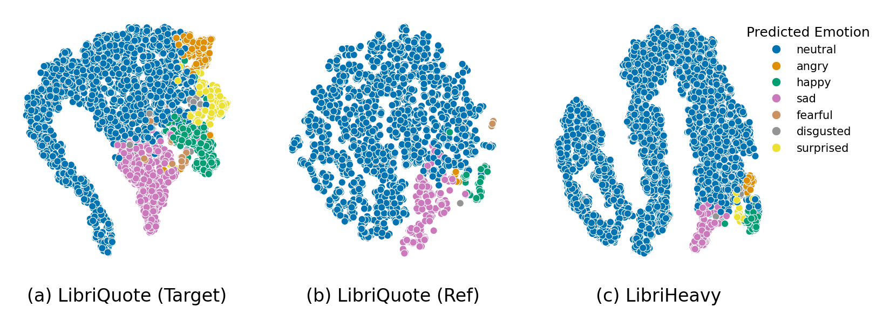

A Speech Dataset of Fictional Character Utterances for Expressive
Zero-Shot Speech Synthesis
Anonymous Authors
Abstract:
Text-to-speech (TTS) systems have recently achieved more expressive and natural speech synthesis by scaling to large speech datasets.
However, the proportion of expressive speech in such large-scale corpora is often unclear.
Besides, existing expressive speech corpora are typically smaller in scale and primarily used for benchmarking TTS systems.
In this paper, we introduce the LibriQuote dataset, an English corpus derived from read audiobooks, designed for both fine-tuning and benchmarking expressive zero-shot TTS system.
The training dataset includes 12.7K hours of read, non-expressive speech and 5.3K hours of mostly expressive speech drawn from character quotations.
Each utterance in the expressive subset is supplemented with the context in which it was written, along with pseudo-labels of speech verbs and adverbs used to describe the quotation (e.g. "he whispered softly").
Additionally, we provide a challenging 7.5 hour test set intended for benchmarking TTS systems: given a neutral reference speech as input, we evaluate system's ability to synthesize an expressive utterance while preserving reference timbre.
We validate qualitatively the test set by showing that it covers a wide range of emotions compared to non-expressive speech, along with various accents.
Extensive subjective and objective evaluations show that fine-tuning a baseline TTS system on LibriQuote significantly improves its synthesized speech intelligibility, and that recent systems fail to synthesize speech as expressive and natural as the ground-truth utterances.
The dataset, evaluation code and audio samples are freely available.

Figure 1. t-SNE projection of emotion vector representations computed with emotion2vec-plus-base. LibriQuote-test (a) quotations and (b) reference narration (non-quotation) utterances; (c) Subsample of LibriHeavy segments (\(N=5734\)).
This page is for research demonstration purposes only.
LibriQuote-test Set
Here, we provide the 30 samples used for the subjective experiments on LibriQuote-test set.
Reference
Text
Ground-Truth
SparkTTS
F5-TTS
MaskGCT
What have you been doing with yourself lately?
No, he would n't; He'd like it and respect you for doing it. But, Polly, it would have been a grand thing for you.
How came I to adventure and play with my life by coming to the country of the Greeks?
I commit him to your care, as you value your lives,
I wore it all through the campaign. Your true warrior is no dandy!
and, if you really mean it, perhaps the old Sausage-Glutton can manage it for you. He's done more wonderful things than that in his time, I can tell you.
This is no mortal, this is naught save a noble angel
From the parts of Hind, O my mother; and I have come to this city to see the world and look about me.
Haven't heard any one talking about him, eh? Come ashore yesterday.
But I'll -- yes, I'll give you a guinea, if you will let me out.
is he afraid? Will the Hurons hear his groans?
That our march is come to a quick end, and that we are in an enemy’s country,
Did you indeed bring horse and arms down this ladder, Warrenton?
The two who lead them are not uniformed -- like as not they are those treacherous ones whom I have such cause to remember.
Pa, mayn’t Tom and Sid and me go to the show?
Well, it’s all terrible sad; but we’ve all got to go, one time or another. So what we want to do is to be prepared; then we’re all right.
This is the best yet -- except for Amos. Golly Moses!
that our bricks for building houses have all come from British kilns?
Where did you ever find such gold work, Bartley?
Aren’t you afraid to let the wind low like that on your neck? Can’t I get a scarf or something?
Yes. You're a good friend. I'll return it in a day or two.
Oh, yes, indeed, sir! I don't want to meet strangers -- and -- and -- I'm not very strong yet. I thank you for considering my feelings so kindly.
Extra air inside, and the best we could do for food. Was gonna try myself, but I don't know Praeger,
Either of you know where I can buy stencils and ink and find some kind of a truck to haul this paper along?
you mustn't expect me for to believe that. I may believe that the moon is made of green cheese, but I won't believe that that's a 'ammer.
Ah, then, she'd never put us off with a newspaper,
I’ve never seen one like him. He did what he wished.
you will make me the less welcome upon that account.
you will be sure to be ready to go with me to East Hall this evening?
I believe poor Annie is dreadfully unhappy.
Other Samples & Models
In this section, we provide additional samples of LibriQuote-test set generated by all the models we tested.
Reference
Text
Ground-Truth
SparkTTS
SparkTTS\(_{\text{FT}, Q}\)
SparkTTS\(_{\text{FT}, Q_f}\)
SparkTTS\(_{\text{Scratch}}\)
SparkTTS\(_{\text{Scratch} + \text{Context}}\)
F5-TTS
MaskGCT
There are not many of your own sort, Miles!
What do you say to that?
Well, I s'pose the big 'ammer that Bob says is as 'eavy as five carts of coals must be 'ereabouts?
It’s not Miss Jessel! But it’s at the window — straight before us. It’s there — the coward horror, there for the last time!